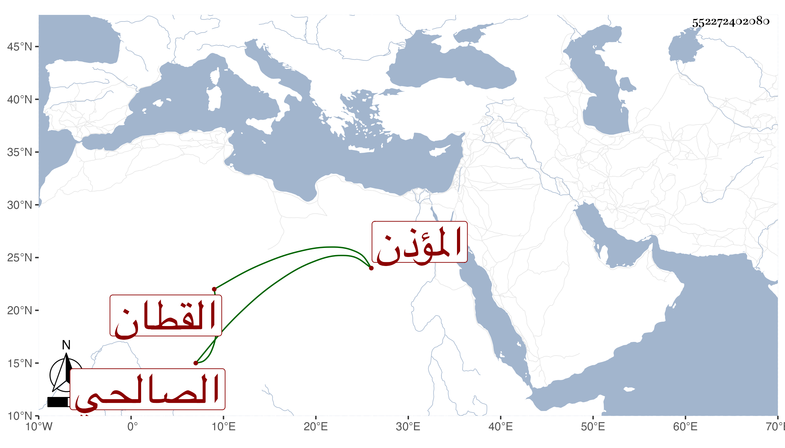

0902Sakhawi.DawLamic.ITO20230111-ara1.EIS1600.552272402080
Biography ID: 552272402080
أحمد بن داود بن إبراهيم بن داود الصالحي القطان أبوه المؤذن هو . ولد سنة سبع وعشرين وسبعمائة وسمع على المزي والبرزالي والعز محمد بن إبراهيم ابن أبي عمر وعبد الرحيم بن إبراهيم بن أبي اليسر وآخرين وحدث سمع منه الفضلاء ، وذكره شيخنا في معجمه وقال لم أجد له سماعا على قدر سنه ثم ذكر أنه قرأ وسمع عليه أشياء وكذا سمع عليه العز عبد السلام المقدسي . مات في رجب سنة ست ، وهو في الأنباء باختصار وكذا في عقود المقريزي .
